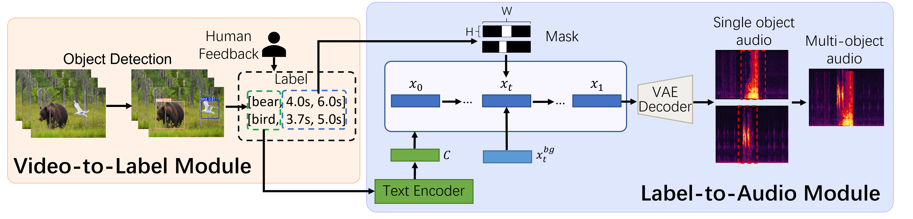

TAGMO: Temporal Control Audio Generation for Multiple Visual Objects Without Training
Xinyu Zhang1,2, Keyu Fan1,2, Yiran Wang1,2, Yingshan Liang1,2,
Jiasheng Lu2, Zhicheng Du1,2, Qingyang Shi1,2, Peiwu Qin1,*
1Shenzhen International Graduate School, Tsinghua University, Shenzhen, China
2Huawei Technologies Co., Ltd., Shenzhen, China
*Corresponding Author
Abstract
With the great popularity of Sora, video-based audio generation has become indispensable. While numerous video-to-audio generation models have emerged, they frequently face difficulties including semantic incompatibilities and synchronization problems, especially in situations with multiple objects. To address these difficulties, we introduce TAGMO, a novel training-free audio generation method that offers precise time control for multi-object video scenarios. Our approach first employs object detection to obtain the class labels and temporal labels of each object, which are then structured and utilized as control conditions within a latent diffusion model (LDM) to generate multi-object audio. Additionally, we innovatively design a time mask based on the corresponding temporal labels and integrate it into the denoising process of the pre-trained audio generation model to achieve accurate temporal control. Experimental results demonstrate that our method enhances temporal alignment accuracy and semantic consistency.
Contributions

Figure 1: Overview of TAGMO design for audio generation, The pipeline consists of two stages: (i)video-to-label module obtains the content information of the video and structuring it into labels and (ii)label-to-audio utilizes the class and time label to generate multi-object temporal control audio.
Audio Generation with Video Description and Label
| Video description | Cats and dogs chase and play on the road, and there are many trees around. | |
| Label(single object) | [dog, {(1.1, 1.8), (4.7, 6.3), (8.5, 8.9)}] | |
| Label(single object) | [cat, {(0.3, 2.1), (5.1, 8)}] | |
| Label(multiple objects) |
[dog, {(1.1, 1.8), (4.7, 6.3), (8.5, 8.9)}] [cat, {(0.3, 2.1), (5.1, 8)}] |
Video-to-Audio Time Synchronization
| Ground Truth | Audios Generated by TAGMO(Ours) | Audios Generated by Diff-Floey | Audios Generated by FoleyCrafter |
|---|---|---|---|
Adding mask at different stages
| Video | |||
|---|---|---|---|
|
Boundingbox & Label |
bird [(0.0, 8.23)] bear [(0.0, 10.0)] |
airplane [(0.0, 7.0)]
truck [(0.0, 1.10), (4.85, 7.0)] car [(0.0, 0.83), (4.87, 7.0)] |
boat [(3.34, 10.0)] |
|
At start stage. (t ∈ [0, 0.33]) |
|||
|
At middle stage. (t ∈ [0.33, 0.67]) |
|||
|
At end stage. (t ∈ [0.67, 1]) |
Ablation Studies
| Label | Baseline | Adding mask without padding | Adding mask with padding(TAGMO) |
|---|---|---|---|
| dog barks [(4,7)] |  |
 |
 |
| toilet [(3,9)] |  |
 |
 |
| typing [(1.5, 6.5)] |  |
 |
 |